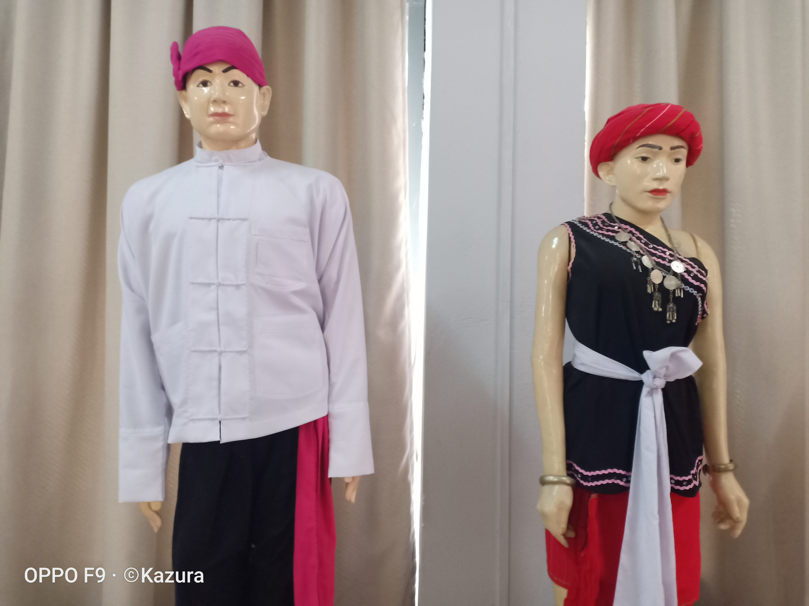

ကယားတိုင္းရင္းသား
ကယားျပည္နယ္ လိြဳင္ေကာ္၊ ဒိးေမာ့ဆို၊ ရွားေတာႏွင့္ ဖရူဆိုၿမိဳ႕နယ္ အ ေရွ႕ပိုင္း
ေဒသမ်ားတငြ္အမ်ားဆံုးေနထိုင္ၾကပါသည္။ပဲခူးတိုင္းေတာင္ငူျမိဳ႔နယ္ႏွင့္ရွမ္းျပည္နယ္ဖယ္ခံုၿမိဳ႕နယ္တိုု႔တ ြင္လည္းအနည္းငယ္ေနထိုင္ၾကပါသည္။အ ေရွ႕ဘက္အရပ္တ ြင္ ေနထိုင္ၾက ေသာကယားတိုင္းရင္းသားကို "မိေထ"ဟု ေခၚသည္။ "မိေထ"မွာေနထကြ္
ရာအရပ္ဟုအဓိပၸါယ္ရပါသည္။တျခားတိုင္းရင္းသားမ်ားကို "ေလာ္ခီး" ဟုေခၚသည္။ "ေလာ္ခီး"မွာျမစ္ညာအရပ္ဟု အဓိပၸါယ္ ရပါသည္။ ေတာင္ဘက္အရပ္တ ြင္ေနထိုင္ၾက ေသာ ကယားတိုင္းရင္းသားမ်ားကို"ေလာ္က်"ဟုေခၚသည္။ "ေလာ္က်"
မွာျမစ္ေျခအရပ္ဟု အဓိပၸါယ္ရပါသည္။
